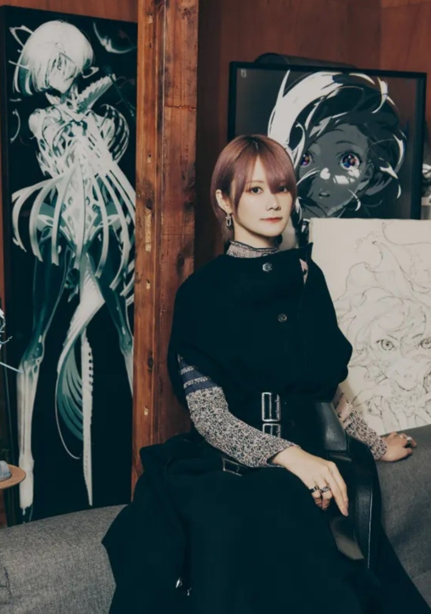

Mai Yoneyama
米山舞（1988年7月12日）是生於日本長野縣的女性動畫師和插畫家。畢業於東京設計學院。在經歷GAINAX和自由職業的階段後，於2019年加入SSS by applibot。
職業經歷
◆2009年：加入 GAINAX，初期擔任動畫師，後升任原畫師，參與《吊帶襪天使》等作品。
◆2014–2016年：以自由職業者身份參與 TRIGGER 的作品，如《黑岩射手》《制約之絆》。
◆2016年：開始插畫工作，設計初音未來GT計劃角色。
◆2019年：加入 SSS by applibot，並舉辦首次個展《SHE》。
代表作品
| 動漫 |
《魔力女管家》(2009) |
| 《吊帶襪天使》(2010) |
| 《黑岩射手》(2012，作畫監督) |
| 《KILL la KILL》(2013，總作畫監督) |
| 《DARLING in the FRANXX》(2018，片尾演出) |
| 《LAZARUS 拉撒路》(2025，片尾導演) |
劇場版
動漫 |
《FLCL Progressive》(2018，副角色設計) |
| 遊戲 |
《火焰之紋章 英雄》(2017，插畫) |
| 《Fate/Grand Order》(2019–2023，角色設計) |
| 《靈魂駭客2》(2022，角色原畫) |
| 《異度神劍3》(2023，角色設計) |
其他活動
| 展覽 |
EGO│米山舞台灣初個展 (2021，台北 d/art 畫廊) |
| EYE│出版紀念展 (2023，台北 d/art 畫廊) |
| Reincarnation 2024 特展 (2024，中國) |
| 廣州插畫藝術節（GAF）特展：BIO (2025，廣州保利世界貿易中心) |
| 合作 |
KATE × 米山舞 × EVE - 彩妝聯名企劃 (2022) |
| PIE International - 《EYE YONEYAMA MAI 米山舞作品集》 (2023) |
| BC × 米山舞 - 聯名雕塑《NEW IN》(2025) |
| Good Smile Company × 初音未來 feat. 米山舞 - 周邊商品 (2025) |
| 初音未來 × 米山舞 - 聯名手辦《The Latest Street Style "Cute" 初音》(2024) |